Unity에 Steam 연동하기
가장 먼저...
Steamworks.NET 패키지를 설치합니다.
위 설명 중 UPM을 통한 설치를 진행했다면 SteamManager.cs 파일을 다운받아 설치합니다. 1. SteamManager:97에 나의 Steam App Id를 작성합니다. 2. SteamManager가 설치될 것인데, 이를 시작하는 씬의 게임 오브젝트에 추가합니다.
여기까지 왔다면, 유니티 프로젝트에 Steam 연동을 마쳤습니다.
빌드 및 테스트
1. Depot 추가하기
-
SteamPipe/디포 에 접근하여 하단
새로운 디포 추가버튼을 클릭합니다.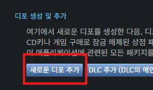
-
디포 이름 설정 후 확인을 선택합니다. ID는 처음 만드는 디포라면 appID에서 +1, 그 이후의 디포 ID의 +1된 값이 default로 들어갑니다.
- 새로 생긴 디포에 값을 설정합니다. 예시는 Windows와 Mac을 따로 나누는 디포로 설정 및 생성했습니다.
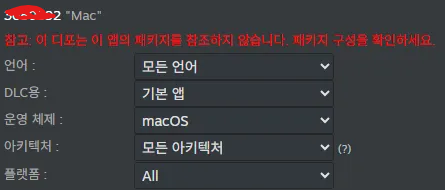
-
저장을 꼭 눌러주신 후에 다시 앱 관리 상단 페이지로 돌아와서 아래 항목을 클릭합니다.
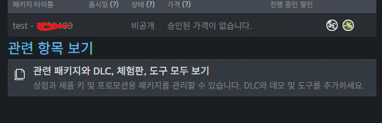
-
상점 패키지의 패키지 타이틀을 클릭합니다.
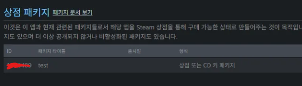
-
포함 된 디포 항목에서 위에 추가한 항목을 추가해주시면 완료됩니다.
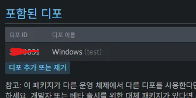
2. Branch 추가하기
👉🏻 이 항목은 선택 사항입니다.
브랜치를 따로 설정하지 않고default에서 테스트, 런칭 및 업데이트를 진행할 수도 있습니다.
새로운 앱 브랜치 생성하기를 선택 후 생성 할 브랜치 이름을 작성합니다.- 설명 : 이 브랜치가 어떻게 사용 될 것인지? 비밀번호 : 입력하면 비공개, 빈 칸이면 공개 테스트
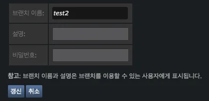

갱신을 클릭하면 새 브랜치가 적용됩니다.
3. Unity 빌드 진행하기
- 빌드 진행 후 나온 결과물을 Steamworks SDK 폴더 내
sdk/tools/ContentBuilder/content에 파일을 추가합니다. - 아래 배치 파일을
sdk/tools/ContentBuilder/에 추가한 후 실행하여 steamcmd로 빌드를 진행합니다. steamcmd.bat
4. Build 설정하기
- 아래 사진과 같이 올라간 빌드를 확인합니다.
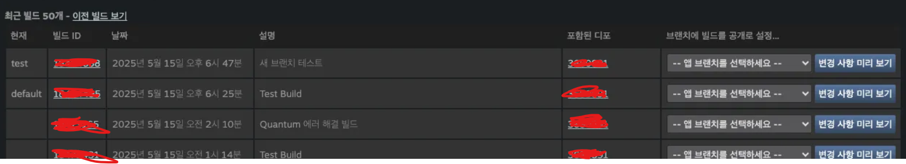
- 테스트 할 브랜치를 선택 후
변경 사항 미리보기를 클릭합니다.
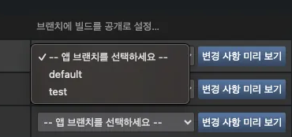
- 정보를 확인 한 후에,
지금 빌드 공개하기를 클릭합니다.
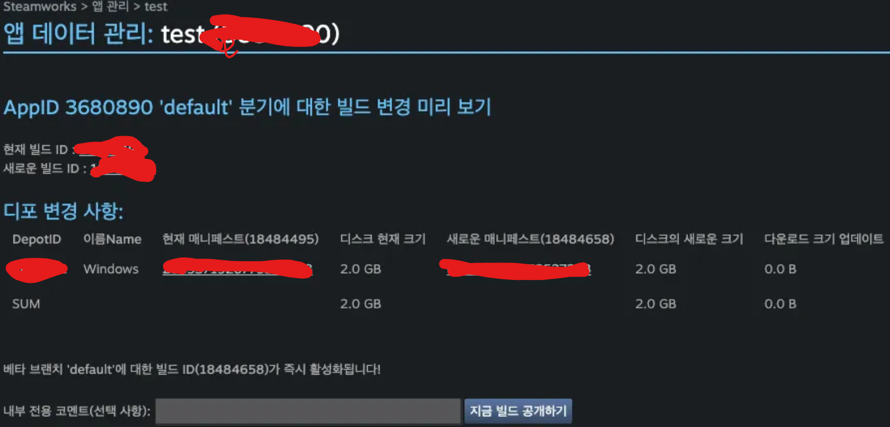
- 빌드 리스트에서 아래와 같이
현재라인에 설정한 브랜치가 표시되었다면 완료된 것입니다.
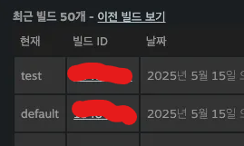
5. 테스트하기
👉🏻 Steamworks.NET API는 에디터에서도 기능을 지원합니다.
에디터에서도 테스트가 가능한 점 참고해주세요. 단, Steam 클라이언트가 실행되어 있어야 합니다.
- Steam 클라이언트를 실행합니다. 만약 실행되어있었다면, 종료 후 재실행합니다.
- 이후에 다운로드 및 업데이트 진행 후 테스트를 진행합니다.
TroubleShooting
빌드 관련
Mono → IL2CPP 빌드 시 에러
원인
- 환경은 Windows입니다.
-
Mono로는 잘 되다가, IL2CPP로 설정 후 빌드 시 아래와 같은 이슈가 발생한 적이 있습니다.
```text Internal build system error. BuildProgram exited with code 1. error: Could not set up a toolchain for Architecture x64. Make sure you have the right build tools installed for il2cpp builds. Details: IL2CPP C++ code builder is unable to build C++ code. In order to build C++ code for Windows Desktop, you must have one of these installed: * Visual Studio 2022 or newer with C++ compilers and Windows 10 (or newer) SDK (recommended) * Visual Studio 2019 with C++ compilers and Windows 10 (or newer) SDK * Visual Studio 2017 with C++ compilers and Windows 10 (or newer) SDK * Visual Studio 2015 with C++ compilers and Windows 10 (or newer) SDK
Visual Studio 2017 (or newer) is detected using
vswhere.exeas well as VSCOMNTOOLS environment variables. Visual Studio 2015 is detected by looking at "SOFTWARE\Microsoft\VisualStudio\14.0_Config\InstallDir" in the registry as well as VSCOMNTOOLS environment variables. Windows 10 (or newer) SDK is detected by looking at "SOFTWARE\Wow6432Node\Microsoft\Microsoft SDKs\Windows\v10.0\InstallationFolder" in the registry.Unable to detect any compatible Visual Studio installation! * Found Visual Studio 2022 installation without C++ tool components
Windows 10 (or newer) SDK is not installed. You can install from here: https://developer.microsoft.com/en-us/windows/downloads/windows-10-sdk/
Unity.IL2CPP.Bee.BuildLogic.ToolchainNotFoundException: IL2CPP C++ code builder is unable to build C++ code. In order to build C++ code for Windows Desktop, you must have one of these installed: * Visual Studio 2022 or newer with C++ compilers and Windows 10 (or newer) SDK (recommended) * Visual Studio 2019 with C++ compilers and Windows 10 (or newer) SDK * Visual Studio 2017 with C++ compilers and Windows 10 (or newer) SDK * Visual Studio 2015 with C++ compilers and Windows 10 (or newer) SDK
Visual Studio 2017 (or newer) is detected using
vswhere.exeas well as VSCOMNTOOLS environment variables. Visual Studio 2015 is detected by looking at "SOFTWARE\Microsoft\VisualStudio\14.0_Config\InstallDir" in the registry as well as VSCOMNTOOLS environment variables. Windows 10 (or newer) SDK is detected by looking at "SOFTWARE\Wow6432Node\Microsoft\Microsoft SDKs\Windows\v10.0\InstallationFolder" in the registry.Unable to detect any compatible Visual Studio installation! * Found Visual Studio 2022 installation without C++ tool components
Windows 10 (or newer) SDK is not installed. You can install from here: https://developer.microsoft.com/en-us/windows/downloads/windows-10-sdk/
at Unity.IL2CPP.Bee.BuildLogic.WindowsDesktop.WindowsDesktopBuildLogic.UserAvailableToolchainFor(Architecture architecture, NPath toolChainPath, NPath sysRootPath, Boolean targetIsSimulator) at PlayerBuildProgramLibrary.PlayerBuildProgramBase.GetIl2CppToolChain(PlatformBuildLogic platform, Architecture architecture, NPath toolChainPath, NPath sysrootPath) at PlayerBuildProgramLibrary.PlayerBuildProgramBase.SetupIl2CppBuild() at PlayerBuildProgramLibrary.PlayerBuildProgramBase.
b__94_0() at Bee.Core.TinyProfiler2Base.SectionT at PlayerBuildProgramLibrary.PlayerBuildProgramBase.SetupPlayerBuild() at WinPlayerBuildProgram.WinPlayerBuildProgram.SetupPlayerBuild() at PlayerBuildProgramLibrary.PlayerBuildProgramBase.RunBuildProgram() at PlayerBuildProgramTypeWrapper.Run(String[] args) at Program.Main(String[] args) UnityEngine.GUIUtility:ProcessEvent (int,intptr,bool&) ```
해결
- Windows 환경에서 Visual Installer 실행 → Visual Studio 수정 선택하여 아래 플러그인들을 설치해주었습니다.
- 워크로드
- C++를 사용한 데스크톱 개발
- .NET 데스크톱 개발
- 개별 도구
- Windows용 C++ CMake 도구
- MSVC v143 - VS 2022 C++ x64/x86 빌드 도구
- Windows 10 SDK (10.0.xxxxx.xx)
- Windows 11 SDK (선택사항, 10.0.xxxxx.xx)
- 워크로드
Plugin을 찾을 수 없다는 빌드 에러
원인
-
Platform 대응이 되지 않은 플러그인이 있다면, 스크립트를 찾다가 에러 남
```text Build completed with a result of 'Failed' in 878 seconds (877524 ms) Building Library\Bee\artifacts\WinPlayerBuildProgram\u1oik\GameAssembly.dll failed with output: Library/Bee/artifacts/WinPlayerBuildProgram/u1oik/GameAssembly.dll.lib ̺귯 Library/Bee/artifacts/WinPlayerBuildProgram/u1oik/GameAssembly.dll.exp ü ϰ ֽ ϴ . s8094hngipw9.obj : error LNK2019: GoogleSignIn_CreateGoogleSignInImpl_GoogleSignIn_Create_m401A326763A0C7821F4BF316C4738F2C2096A569 Լ Ǵ Ȯ ܺ ȣ s8094hngipw9.obj : error LNK2019: GoogleSignIn_EnableDebugLoggingGoogleSignInImpl_EnableDebugLogging_m3338A356011EB687B8676EC25A71BBD973A469AC Լ Ǵ Ȯ ܺ ȣ s8094hngipw9.obj : error LNK2019: GoogleSignIn_ConfigureGoogleSignInImpl_GoogleSignIn_Configuration_Handler_m2C6D14CD308083F32484619ADC594C493935D0A4 Լ Ǵ Ȯ ܺ ȣ s8094hngipw9.obj : error LNK2019: GoogleSignIn_SignInGoogleSignInImpl_GoogleSignIn_SignIn_m7B7F22E2454C78C4378E4392C64061CB1B40884B Լ Ǵ Ȯ ܺ ȣ s8094hngipw9.obj : error LNK2019: GoogleSignIn_SignInSilentlyGoogleSignInImpl_GoogleSignIn_SignInSilently_mB144D7D9AF5535D72DEB5E77EB2B99C10FD5CFD9 Լ Ǵ Ȯ ܺ ȣ s8094hngipw9.obj : error LNK2019: GoogleSignIn_SignoutGoogleSignInImpl_GoogleSignIn_Signout_m305C85607165D07515C99252125CED0070D0A0EF Լ Ǵ Ȯ ܺ ȣ s8094hngipw9.obj : error LNK2019: GoogleSignIn_DisconnectGoogleSignInImpl_Disconnect_mF262C0769A2594B65F3EF716C1A2C61F5ED10F4A Լ Ǵ Ȯ ܺ ȣ s8094hngipw9.obj : error LNK2019: GoogleSignIn_DisposeFutureGoogleSignInImpl_GoogleSignIn_DisposeFuture_m91010E17B715B99F218D90BA0EBA42D69C530F2C Լ Ǵ Ȯ ܺ ȣ s8094hngipw9.obj : error LNK2019: GoogleSignIn_PendingGoogleSignInImpl_GoogleSignIn_Pending_m99DBED3FD408FC386928AF8FCB09FE7845D06EE7 Լ Ǵ Ȯ ܺ ȣ s8094hngipw9.obj : error LNK2019: GoogleSignIn_ResultGoogleSignInImpl_GoogleSignIn_Result_mD1E3527C70DDFCB7112A1020B247C8675A6CC54A Լ Ǵ Ȯ ܺ ȣ s8094hngipw9.obj : error LNK2019: GoogleSignIn_StatusGoogleSignInImpl_GoogleSignIn_Status_mDCA1E182C9E2F79CA91D42BEEA594FAC70AFBCE9 Լ Ǵ Ȯ ܺ ȣ s8094hngipw9.obj : error LNK2019: GoogleSignIn_GetServerAuthCodeGoogleSignInImpl_GoogleSignIn_GetServerAuthCode_mD43AB1119C7DAD9A414A4AF01112201AC5F9359A Լ Ǵ Ȯ ܺ ȣ s8094hngipw9.obj : error LNK2019: GoogleSignIn_GetDisplayNameGoogleSignInImpl_GoogleSignIn_GetDisplayName_m2836B7EB55BFA996C9645C42698F8B6A791ED3E6 Լ Ǵ Ȯ ܺ ȣ s8094hngipw9.obj : error LNK2019: GoogleSignIn_GetEmailGoogleSignInImpl_GoogleSignIn_GetEmail_mB141846F5E06B07F1CF75811B4F2B98EEAA4BE06 Լ Ǵ Ȯ ܺ ȣ s8094hngipw9.obj : error LNK2019: GoogleSignIn_GetFamilyNameGoogleSignInImpl_GoogleSignIn_GetFamilyName_m2CC28FD83273DF7FAF9CBC6CAE4A4CD4542B3D7F Լ Ǵ Ȯ ܺ ȣ s8094hngipw9.obj : error LNK2019: GoogleSignIn_GetGivenNameGoogleSignInImpl_GoogleSignIn_GetGivenName_mE11938236DC97D8ACED926F349949A10C3E8F662 Լ Ǵ Ȯ ܺ ȣ s8094hngipw9.obj : error LNK2019: GoogleSignIn_GetIdTokenGoogleSignInImpl_GoogleSignIn_GetIdToken_mB10A0710E03E0C029E05FB058DE2BC19B14FB444 Լ Ǵ Ȯ ܺ ȣ s8094hngipw9.obj : error LNK2019: GoogleSignIn_GetImageUrlGoogleSignInImpl_GoogleSignIn_GetImageUrl_mABCABD4D3A2DC5E6614016641FA1B3A9C91D0FBD Լ Ǵ Ȯ ܺ ȣ s8094hngipw9.obj : error LNK2019: GoogleSignIn_GetUserIdGoogleSignInImpl_GoogleSignIn_GetUserId_m2C15898EC40487758744D44ABFF4D8672F91FD3B Լ Ǵ Ȯ ܺ ȣ Library\Bee\artifacts\WinPlayerBuildProgram\u1oik\GameAssembly.dll : fatal error LNK1120: 19 Ȯ ܺ Դϴ .
UnityEngine.GUIUtility:ProcessEvent (int,intptr,bool&)
```
해결
- 위 경우는 GoogleSignIn 패키지의 asmdef가 Any platform으로 설정되어 있었어서, 실상은 Android, iOS만 지원하여 둘만 체크 후 이슈 해결
Mono는 아니었는데 IL2CPP는 빌드 후 용량이 왜 이렇게 크지?
원인
- Windows 빌드 폴더 내부에 아래 두 폴더가 필연적으로 포함 됨, 하지만 두 폴더의 파일 크기가 말도 안되게 큼
*_BackUpThisFolder_ButDontShipItWithYourGame*_BurstDebugInformation_DoNotShip
- 두 폴더는 디버깅용 빌드이고, 라이브 시에는 노출되면 안되는 파일들임
해결
-
depot.vdf에 두 폴더를 FileExclusion 헤더를 통해 제외하여 해결
```text "DepotBuild" { // Set your assigned depot ID here "DepotID" "3680891"
// include all files recursivley "FileMapping" { // This can be a full path, or a path relative to ContentRoot "LocalPath" "./Windows/*" // This is a path relative to the install folder of your game "DepotPath" "." // If LocalPath contains wildcards, setting this means that all // matching files within subdirectories of LocalPath will also // be included. "Recursive" "1" } /// 요 것들 "FileExclusion" "*BackUpThisFolder_ButDontShipItWithYourGame*" "FileExclusion" "*BurstDebugInformation_DoNotShip*" /// 요 것들}
```
-
용량 크기 차이
- 제외 전 :
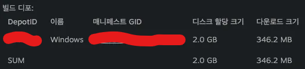
- 제외 후 :
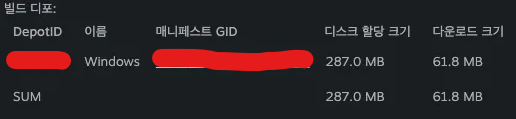
Windows에서 MAC 빌드, MAC에서 Windows 빌드 시…
- 다른 Standalone 플랫폼의 Mono 빌드는 가능하지만 IL2CPP 빌드는 불가
Steamworks 관련
설정을 다 하고 Steam 클라이언트에서 설치하는데 무한 업데이트에 빠졌어요…
- 앱 데이터 관리 → 설치 → 일반 설치에 실행 옵션을 꼭 확인해야 합니다.
- 실행 파일을 찾지 못해서 완료 수행하지 못하는 것이므로, 실행 파일의 경로를 확실하게 설정해주세요.
- content 폴더에 상위 폴더가 없다면,
project.exe - content 폴더에 상위 project 이름 폴더가 있다면,
project/project.exe
- content 폴더에 상위 폴더가 없다면,
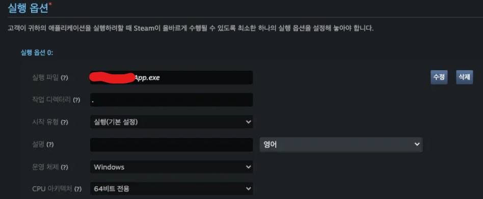
변경하고 저장을 눌렀는데 반영이 되지 않아요…
- steamworks의 설정 사항은 저장 후 게시까지 이루어져야 스팀 서버에 반영이 되어요.
- 앱 데이터 관리 → 게시 탭에서
변경 사항 보기를 클릭했을 때 변경 사항이 있다면?- 게시 준비 → Steam에 게시 → STEAMWORKS 입력 / 내부 변경 정보 입력 (optional) → 진짜 게시
빌드 업로드, 브랜치 최신화 완료했는데 업데이트는 언제 뜨나요?
- steamworks에서는
3분 뒤 확인을 권장하는데, steam 클라이언트를 재실행하면 바로 확인할 수 있습니다.
빌드 후 Test 브랜치를 최신화 했는데 설정에 뜨지 않아요…
- Steam 클라이언트를 재실행해봅니다.
- 그래도 안 뜨면 Steam 클라이언트를 종료한 후
steam://flushconfig를 실행해봅니다. - 그래도 안 뜨면 Steam 클라이언트를 삭제 후 재설치합니다. (저는 이 방법으로 새 브랜치가 떴습니다.)